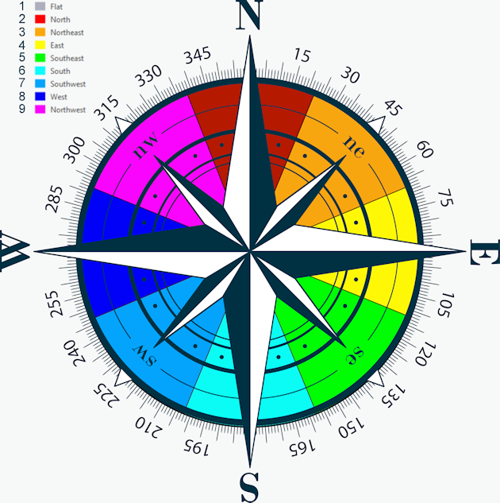

Population Summary
These estimates are based on the 2020 Census data.
2020 Census block population data estimates this fire impacted #### people living within the fire impacted area. The impacted area (xyz acres) of the fire is defined by the boundaries of all HUC12 watersheds intersecting the fire boundary. Population data existed for ##% of the impacted area.
2020 Census block population data estimates this fire impacted #### people living within the fire impacted area. The impacted area (xyz acres) of the fire is defined by the boundaries of all HUC12 watersheds intersecting the fire boundary. Population data existed for ##% of the impacted area.
Surface Management Agency Summary
These data are based on the USDI BLM Surface Management Agency (SMA) layer (Figure 1).
Figure 1. The acreage of lands managed by agencies within the fire area.
Soils Summary
These data are based on the NRCS gSSURGO layer (Figure 3).
Figure 3. The percent area of hydrologic soil groups within the fire area. Soils can be grouped into four hydrologic soil groups (A, B, C, & D) based on their hydrologic characteristics; primarily the degree to which the soil type promotes runoff or infiltration. Hydrologic group A has the highest rate of infiltration and generates very little runoff while hydrologic group D has the lowest rate of infiltration and generates a large amount of runoff. Sands tend to promote infiltration while clays promote runoff; read more about hydrologic soil groups here: https://engineering.purdue.edu/mapserve/LTHIA7/lthianew/hsg.htm.
| HYDROLOGIC SOIL GROUPS | |
|---|---|
| Group A | Sands that are well drained with high infiltration and low runoff |
| Group B | Fine to coarse soils that are well drained with moderate infiltration and runoff |
| Group C | Soils containing an impermeable layer that slows infiltration and promotes runoff |
| Group D | Soils that are largely made of clay, have a high water table, or are shallow above an impermeable layer; this soil group has the highest potential for runoff |
Land Cover Summary
These data are based on the LANDFIRE Existing Vegetation Type (EVT) layer where the majority of pixels belong to the Name and Code here.
Table 3. Percent cover represents the proportion of the burned area occupied by the majority EVT cover type.
Topography Summary
These data are based on the USGS National Elevation Dataset (NED) layer.

Figure 4. A compass rose displaying aspect values ranging from -1 to 360. Values of -1 represent terrain that is considered flat, values 0 and 360 both represent north facing slopes, a value of 90 represents east facing slopes, a value of 180 represents south facing slopes, and a value of 270 represents west facing slopes.
Table 4. Statistics describing aspect (the direction a surface faces(Figure 4)) across the fire area.
Table 5. Statistics describing elevation in meters above the local mean sea level (LMSL) across the fire area using the NAVD88 vertical datum.
Table 6. Statistics describing slope (steepness of a surface measured in degrees) across the fire area.
Slope degree values range from 0° to 90° where 0° slopes are flat / horizontal and 90° slopes are severely steep / vertical.